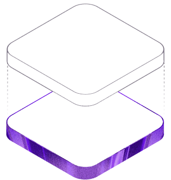

似水Sishui
浙江理工大学 · 机器人工程 · 大一
从底层代码到物理定律，从 3D 建模到哲学文本——
我对理解"事物如何运作"上瘾。
关于我
我是谁
浙江理工大学机器人工程专业大一学生。写 C/C++ 和 Java，做 Blender 建模，读哲学和物理。编程是我的工具，物理是我的视角，建模和绘画是创作出口。
我在做什么
用这个网站作为练手项目——从 Vite + Tailwind CSS 搭骨架，到暗色模式和响应式，每一个模块都在边学边做中完善。同时在读 Effective Modern C++ 和 CSAPP，补计算机底层基础。
我的方向
短期让网站上线并持续记录学习。中期深入全栈开发和 C++ 项目。长期想做 OS、编译器、AI 模型、独立游戏——不给自己设边界，每学期专注于 3-4 件最重要的事。
项目作品
边学边做的练手项目，每一个都踩过坑
技术工具
按掌握程度分类：熟练 / 学习中 / 初探
联系我
聊项目、合作或任何有趣的话题